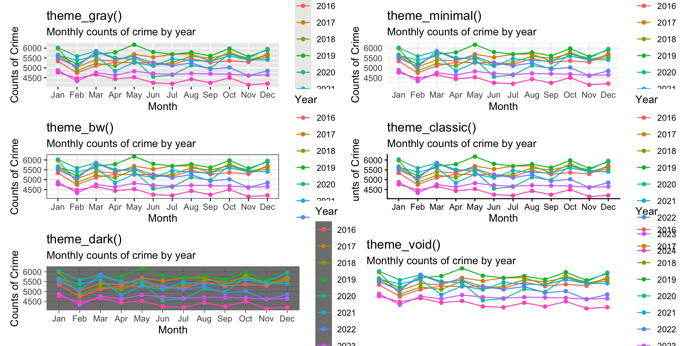
Advanced ggplot2 and Storytelling
In the previous chapter, we learned the foundations of ggplot2 and how to create clear, effective graphics using the three key components of a ggplot(): layers, aesthetics, and geometries. We focused on building individual visualizations that accurately represent data.
This chapter moves beyond creating single plots and focuses on presenting multiple visualizations as part of a larger narrative. In practice, analysts rarely stop after producing one figure. Instead, they refine visual design choices, compare multiple visualizations together, and organize graphics into a coherent story that communicates insight to an audience.
The goal of this chapter is to transform basic plots into polished, report-ready visualizations that guide interpretation and support analytical storytelling. By the end of this chapter, you will be able to:
- Customize plot appearance using themes, colors, fonts, and scales
- Improve readability through labels, annotations, and formatting
- Create faceted visualizations for grouped comparisons
- Combine multiple graphics into figure panels
- Add interactive elements to visualizations
- Design visualizations that support narrative and communication goals
Rather than treating visualization as simply generating graphs, this chapter approaches visualization as communication. Design choice has a large influence on how readers interpret information, so knowing what tools are available is crucial for building your toolkit.
Customizing Themes and Scales
The first step in making a visualization feel polished is to improve the way the existing data is presented. At this stage, the goal is to move beyond the default ggplot2 appearance and begin shaping the plot so that it is more visually consistent with the story we want to tell. We do this by adjusting the theme and the scales.
Themes control the non-data parts of the plot, such as: the background, gridlines, axis text, axis titles, legends, plot titles and margins, and so on.
Scales control how data values are translated into visual values, such as axis limits, tick mark breaks, labels, color palettes, point sizes, and line types.
Together, themes and scales let us turn a basic plot into something that looks intentional and professional. By changing themes and scales, we can guide attention toward the important parts of the figure and reduce distractions.
Theme functions
ggplot2 includes several built-in themes that change the overall look of a plot. Common examples include:
-
theme_gray()the default theme -
theme_minimal()a clean, light theme with reduced clutter -
theme_bw()a black-and-white theme with stronger structure -
theme_classic()a simple theme with minimal gridlines -
theme_dark()a dark theme -
theme_void()removes most plot elements, useful for maps or special layouts
To illustrate, let’s take the plot for crimes in Phoenix we built in the last chapter and show the various themes:
These themes are often a good starting point because they instantly change the visual tone of the figure. From there, we can refine individual elements using theme(). The theme() function lets us customize specific parts of the plot, including the title size and position, the axis text size, the legend placement, the gridline style, the plot background, and so on.
Let’s use the theme_minimal() function and make some adjustments to our plot. First, we need to define the data object. We can grab the code from the prior chapter:
# load the libraries we need
library( DWVpack )
library( tidyverse )
library( dplyr )
# data
crime_monthly <- tidy_phx_crime |>
select( year, month ) |>
arrange( year, month ) |>
group_by( year, month ) |>
summarize( crimes = n() , .groups = "drop" )
# code for the plot
ggplot(
data = crime_monthly,
mapping = aes( x = month, y = crimes, group = year, color = factor( year ) )
) +
geom_point() +
geom_line() +
labs(
title = "Crime in Phoenix",
subtitle = "Monthly counts of crime by year",
x = "Month",
y = "Counts of Crime",
color = "Year"
) Now, we have our plot as before. Note that the ggplot() is itself an object, so we can skip reproducing the code if we just assign it as an object like this:
# define the object
crime_plot <- ggplot(
data = crime_monthly,
mapping = aes( x = month, y = crimes, group = year, color = factor( year ) )
) +
geom_point() +
geom_line() +
labs(
title = "Crime in Phoenix",
subtitle = "Monthly counts of crime by year",
x = "Month",
y = "Counts of Crime",
color = "Year"
)
# render the object
crime_plot
Since we have crime_plot as our stored plot, we can add arguments that improve the visualization.
First, add the theme_minimal() argument to the plot:
crime_plot + # we add a plus sign here to tell it we have more info for it to use
# then we add the theme_minimal function
theme_minimal()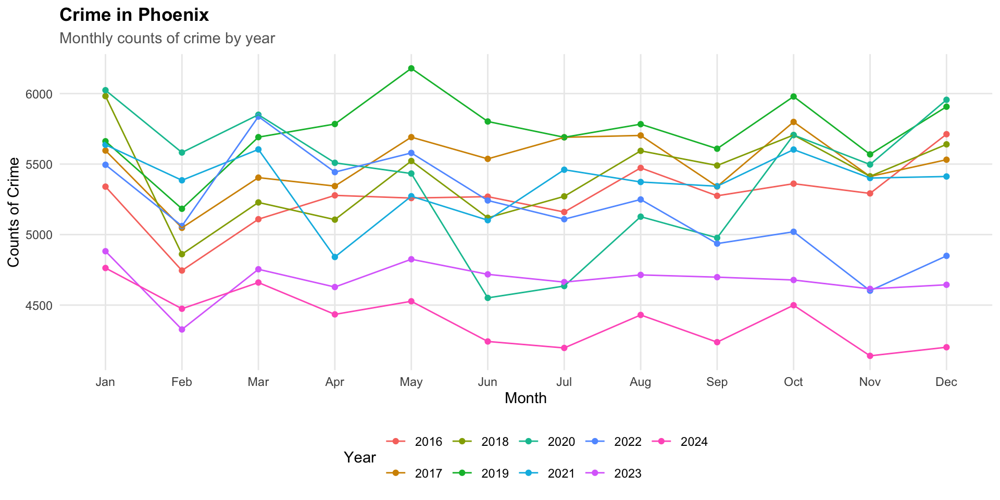
Now, using the theme() function we can edit the theme shown for crime_plot. Let’s run it first and then look through it:
crime_plot +
theme_minimal() +
theme(
plot.title = element_text( face = "bold" ),
plot.subtitle = element_text( color = "gray40" ),
legend.position = "bottom",
panel.grid.minor = element_blank()
)
This version does several things:
-
plot.title = element_text(face = "bold")makes the title stand out -
plot.subtitle = element_text(color = "gray40") softens the subtitle -
legend.position = "bottom"moves the legend to a more readable location -
panel.grid.minor = element_blank()removes minor gridlines to reduce clutter
Pretty nifty eh? There are a lot of options available. Take a look at ?theme to see more.
Scale functions
Scale functions control how the values in the data are displayed on the plot.
Some common scale functions are:
- scale_x_continuous() and scale_y_continuous() for numeric axes
- scale_x_discrete() and scale_y_discrete() for categorical axes
- scale_color_manual() and scale_fill_manual() for custom colors
- scale_color_brewer() and scale_fill_brewer() for palette-based color choices
- scale_x_log10() or scale_y_log10() for logarithmic scales
Scale functions are useful because they let us improve clarity without changing the underlying data. They help answer questions like: How many tick marks should appear? What labels should be shown? Should values be rounded? Which colors should represent each group?
How these functions work together
It helps to think about the plot in layers:
-
geom_...functions define what is drawn -
labs()defines what the plot says -
theme()defines how the plot looks -
scale_...()defines how values are displayed
This division of labor is one of the strengths of ggplot2. Each function has a specific role, and together they make the plot easier to build and revise.
Faceting for Comparisons
One of the most common challenges in visualization is comparing groups. Suppose we want to compare crime types over time. A single plot that includes every category of crime can quickly become cluttered and difficult to interpret. Too many colors, overlapping lines, crowded points, different scales, etc. may make the visualization harder to read rather than easier.
Faceting provides a solution to this problem. Faceting splits a dataset into subsets and displays each subset in its own panel while keeping the same plotting structure. This allows us to compare groups side-by-side using a consistent visual framework. Instead of asking the viewer to mentally separate groups within one crowded figure, faceting creates separate but coordinated views.
ggplot2 provides two primary faceting functions facet_wrap() and facet_grid(). Both functions create multiple panels, but they organize the panels differently. facet_wrap() creates a series of panels that “wrap” across rows or columns and is useful when there is one grouping variable and there are many categories. The basic structure is facet_wrap( ~ variable ) where the tilde (~) indicates the variable used to create the facets.
To illustrate, let’s again use the Phoenix crime data and show monthly crime trends by year for each type of crime. Think about the data we want to plot and how to design the recipe to give us that data. Essentially, we want crimes by year and month, but now we also want that for each crime type. So, we just need to include the crime type variable in our recipe. If you look through the tidy_phx_crime object, you will see that there is a column called “crime_type_clean”. We just add that to our recipe:
Now, using View( crime_type_monthly ) we can see how the data are structured.
To get started, take a look at the data where we plot crimes by month for each type all together. To do this, we change the group = argument and the color = arguments to be the crime_type_clean column. Since we are building a new plot, we need a new ggplot() object:
crime_type_plot <-
ggplot(
data = crime_type_monthly,
mapping = aes( x = month, y = crimes, group = crime_type_clean, color = factor( crime_type_clean ) ) ) +
geom_point()
crime_type_plot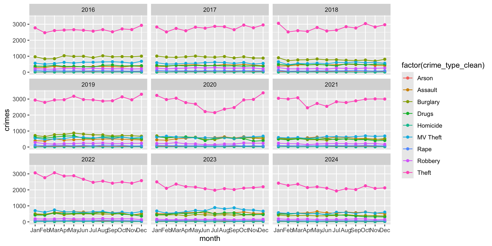
Yikes! Not a good visualization is it? (I have removed the geom_line() here for a reason).
Think about why this visualization is problematic.
First, it is hard to see what exactly we are visualizing. What the plot shows is the count of each type of crime for each year. Yeah, that does sound confusing! (and it looks it as well!)
Rather than having all of these data on a single plot, we could create a plot (or plots) that have:
- monthly counts of crime for each type of crime and repeat the plot for each year
- monthly counts for each year and then repeat that for every type of crime
Each of these is going to tell us something different so let’s take a look at each in turn.
Year as a Facet
We want to plot monthly counts for each type of crime, then have a separate plot for each year. That plot will tell us which crimes are most (least) prevalent across years.
We can use facet_wrap() to create a separate plot (or facet) for each year. All we do is add the function with the faceting variable to the plot:
crime_type_plot +
geom_point() +
geom_line() +
# here is our faceting function at work!
facet_wrap( ~ year ) 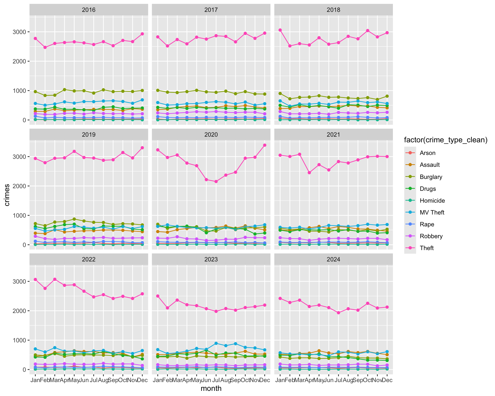
Examine the plot, think about what story it tells us about crime in Phoenix over the years?
Now, take a look at this plot, which is the same data but we have tweaked the output a bit:
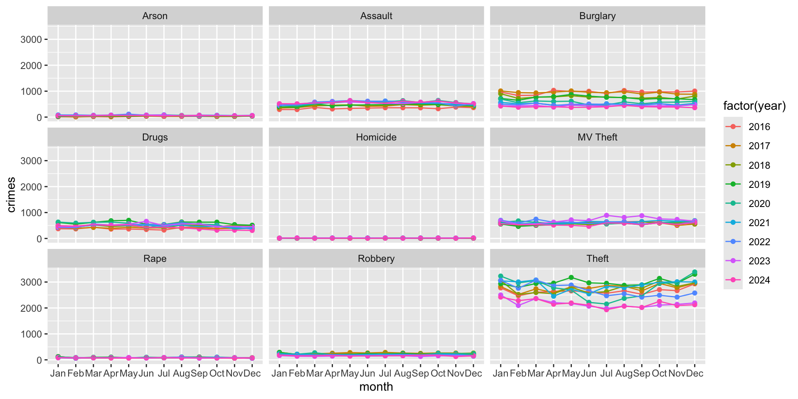
Think about how these two plots are different. It is the same information, just displayed in a different way.
From the second plot, where we have just a single row of plots, we can see that Theft is the most common crime each year and that it has had a long term decline. NOTE: These are counts, not rates, so they do not adjust for population. What do you think happened around March 2020?
Take a look at the other crimes. It is hard to see what is going on with these, right?
A common issue that occurs when we start including multiple categories is that differences in the frequency of each category can influence the display of information. Here, the issue is that the other types of crime are getting squished together because the y-axis is on the same scale for all types. Since theft is much more common than homicide, this makes the monthly differences in homicide (or other relatively infrequent crime types) harder to see. We will see below how to address this issue, but now let’s look at presenting the same data a bit differently.
Crime Type as a Facet
What if we were interested in yearly differences for each type of crime. We want to plot monthly counts for each year (as we did in the prior chapter), then have a separate plot for each type of crime.
We can use facet_wrap() to create a separate plot (or facet) for each type of crime. All we do is add “crime_type_clean” to the faceting function and make “year” our grouping variable:
crime_type_plot2 <- ggplot(
data = crime_type_monthly,
mapping = aes( x = month, y = crimes, group = year, color = factor( year ) ) )
crime_type_plot2 +
geom_point() +
geom_line() +
facet_wrap( ~ crime_type_clean )
Now hold on, does this look wonky to you? We saw this problem above, but it is more pronounced now. The scales are all the same across the crime types. Making the type of crime the faceting variable didn’t fix our problem. Let’s now look at how to solve this problem (then come back to our plots) by changing the scales.
Free scales versus fixed scales
As we just saw, the default behavior for faceted plots is to use the same axis scales across all panels. This is usually beneficial because it preserves comparability and does not exaggerate differences. However, sometimes categories differ so dramatically that fixed scales hide important variation. In those cases, we can allow scales to vary using scales = "free".
crime_type_plot2 +
geom_point() +
geom_line() +
# note the change to the facet_wrap() function
facet_wrap( ~ crime_type_clean, scales = "free" )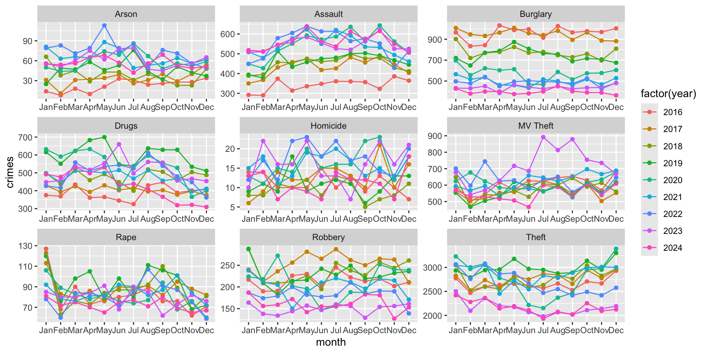
What a difference, right!?!
It is important to note that free scales improve visibility within panels, but they reduce direct comparability between panels. For example, compare the panel for Arson with the panel for Drugs. The scale for the latter is nearly 10x greater. This means that we can’t just compare across (and we should alert the reader of this issue as well to prevent misinterpretation).
This creates an important visualization tradeoff: fixed scales support comparison, but free scales support detail visibility. The choice depends on the goal of the visualization, but it is important to keep in mind when you are creating visualizations (AND when you are reviewing visualizations created by others!)
Now, think back to our comparison:
- monthly counts of crime for each type of crime and repeat the plot for each year
- monthly counts for each year and then repeat that for every type of crime
Does it make sense to free the scale for the first one (i.e. monthly counts for each type faceted by year)?
Combining Multiple Plots
As visualizations become more sophisticated, a single figure is often not enough to communicate the full story in the data, even if it has been faceted. As we just saw, there are different ways to present data on monthly counts of crime by type and across years.
In practice, analysts frequently need to present:
- multiple views of the same dataset,
- comparisons across measures,
- summary figures alongside detailed figures,
- or collections of plots that support a broader narrative.
Rather than displaying separate charts independently, we can combine them into coordinated layouts.
Combining plots allows us to organize information more clearly, guide readers through a sequence of ideas, compare related patterns, and create report-ready figure panels or dashboard layouts (as we will see in later chapters).
Why combine plots? A single chart usually answers one question. A collection of charts can answer several connected questions simultaneously. Combining plots helps readers move through the analysis more naturally.
Several R packages support plot composition, but we will focus exclusively on patchwork because it uses simple and intuitive syntax and compatibility with ggplot2.
The patchwork package
The patchwork package allows plots to be combined using operators such as: | which places plots side-by-side and / which stacks plots vertically. This creates a layout system that feels similar to arranging blocks.
To use the package, first install it then load the library (remember that you only need to install the package once, but each time you open RStudio you need to load the library):
install.packages( "patchwork" )
library( "patchwork" )Suppose we want to plot the crime_plot object (remember this is all crimes by month for each year) along with a separate plot that is the crime types. This figure would give us the overall trends by year as well as a plot with trends for each type.
Now, let’s create a separate plot that is the different types over time. There is a lot here, so I will walk through it in the code:
type_crimes_plot <-
ggplot(
data = crime_type_monthly,
mapping = aes(
x = month,
y = crimes,
group = crime_type_clean,
color = factor( crime_type_clean )
)
) +
geom_point() +
geom_line() +
# Put all facets in one row
facet_wrap( ~ year, nrow = 1 ) +
# change the labels using the scale_x_discrete() function
scale_x_discrete(
labels = c(
"J", "F", "M", "A", "M", "J",
"J", "A", "S", "O", "N", "D"
)
) +
# create the labels
labs(
title = "Crime in Phoenix",
subtitle = "Monthly counts of crime type by year",
x = "Month",
y = "Counts of Crime",
color = "Crime Type"
) +
# Move legend to bottom
theme_minimal() +
theme(
legend.position = "bottom"
)
# render it
type_crimes_plot
Now we can put them together by using the | operator:
crime_plot | type_crimes_plot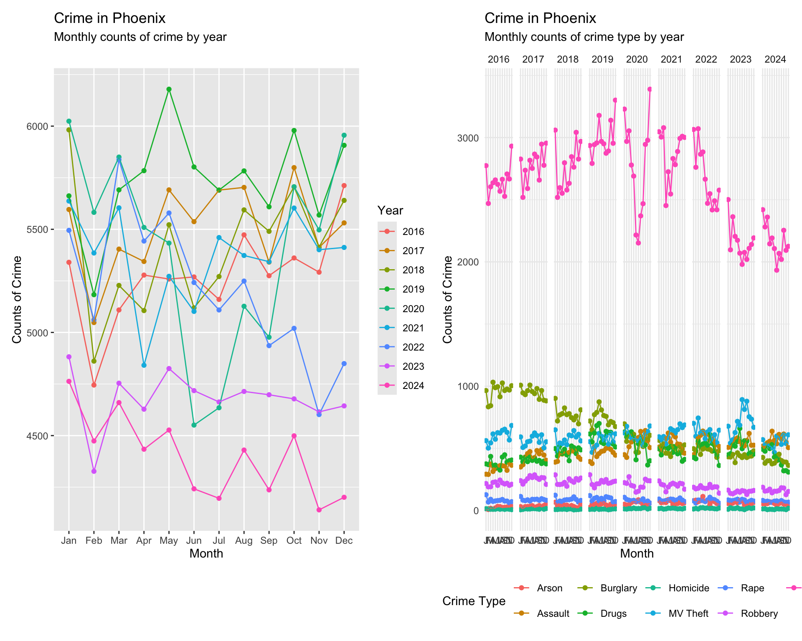
Alternatively, we could stack them by using the / operator:
crime_plot / type_crimes_plot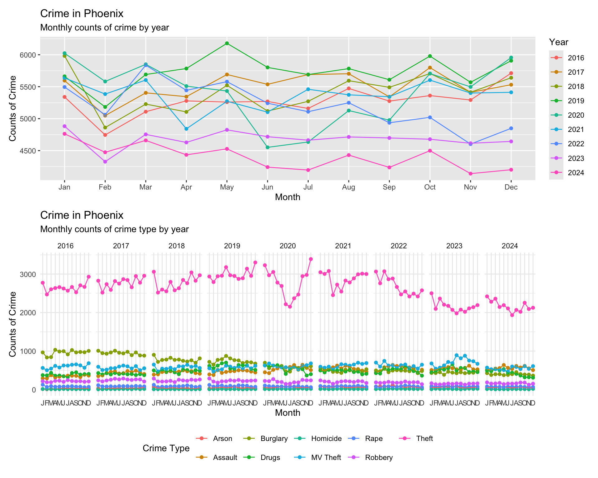
The patchwork syntax is very flexible allowing multiple plot placement:
( crime_plot | crime_plot ) / type_crimes_plot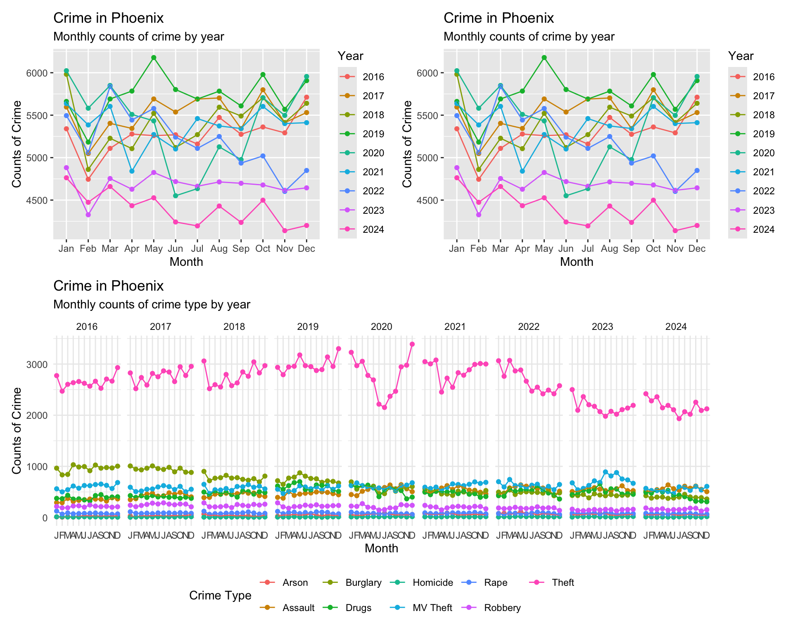
This gets a bit squished, but you get the point.
The package also allows annotation using the plot_annotation() function:
crime_plot / type_crimes_plot +
plot_annotation(
title = "Exploring Crime in Phoenix",
subtitle = "Multiple Visualizations of Crime",
caption = "Source: City of Phoenix Open Data Portal"
)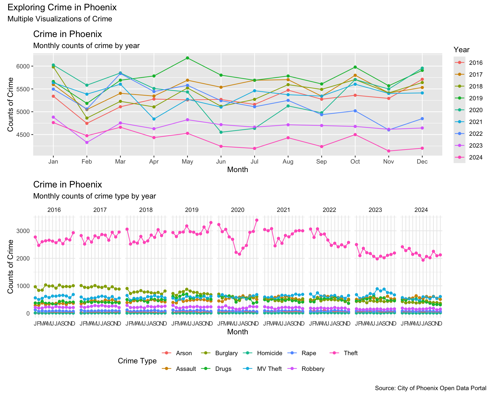
Storytelling Through Visualization
At this point, we know how to create plots, customize their appearance, facet comparisons, and combine multiple graphics into coordinated layouts. The next step is learning how to use these visualizations to tell a story. That is, we want to pull all of this together (and a few extra tools) to emphasize what we want the reader to take away from the visualization. Data visualization is not only about displaying information. It is also about guiding interpretation.
A strong visualization helps answer questions such as:
- What should the reader notice first?
- Which comparison matters most?
- What is surprising or important?
- What conclusion should the reader take away?
We have already built some useful visualizations, now we want to add a few more aspects to the plots to “tell the story”.
One useful tool for doing this is annotation. ggplot2 includes several useful annotation functions such as annotate(), geom_text(), geom_label(), geom_vline(), geom_hline(), geom_segment().
Let’s take a look, again, at the monthly plot of crimes and think about where we might want to annotate for the reader:
crime_plot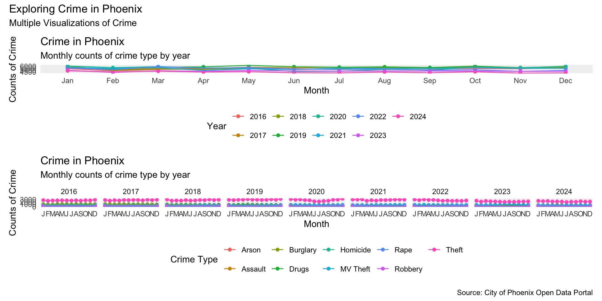
What about the downturn around May 2020 that was the result of the COVID-19 pandemic lockdowns. Let’s add an annotation to the plot that emphasizes this:
crime_plot +
annotate(
"text",
x = "Jun",
y = 5000,
label = "Decline due to Lockdowns"
) 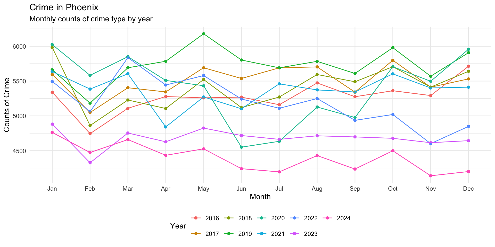
Ok that is a start, but we can do better by adjusting the size and color and inserting a hard return using \n in the label:
crime_plot +
annotate(
"text",
x = "Jun",
y = 5000,
label = "Note the\ decline due\n to lockdowns",
size = 3,
color = "firebrick"
) 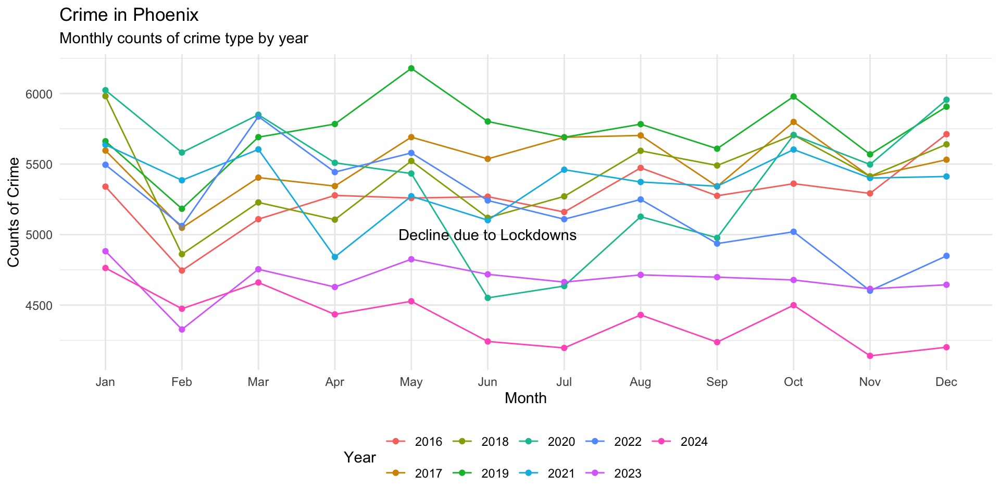
This looks better, so we can add it to our plot object like this:
crime_plot <- crime_plot +
annotate(
"text",
x = "Jun",
y = 5000,
label = "Note the\ decline due\n to lockdowns",
size = 3,
color = "firebrick"
) Another point to emphasize is the draw attention to the gap that emerges in November after 2021:
crime_plot +
annotate(
"text",
x = "Nov",
y = 5100,
label = "Note decline\n post 2021",
size = 3,
color = "darkblue"
) 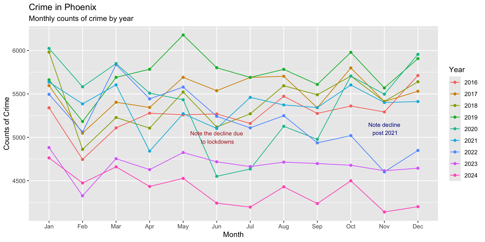
We could also add a line segment to draw attention to this:
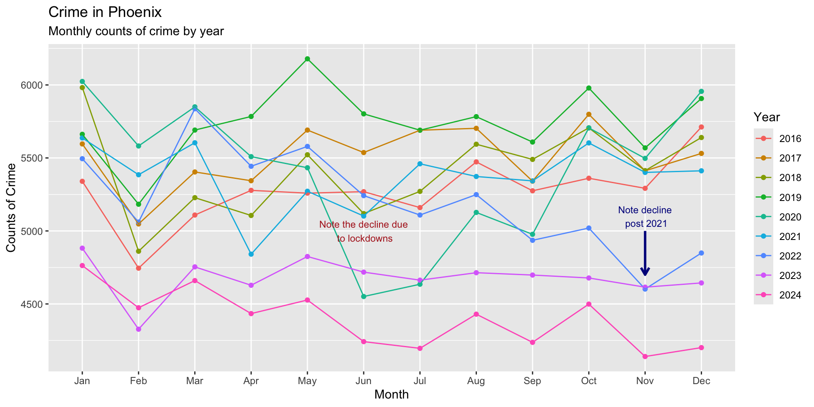
Several might make this more clear:
crime_plot +
annotate(
"text",
x = "Nov",
y = 5100,
label = "Note decline\n post 2021",
size = 3,
color = "darkblue"
) +
annotate(
"segment",
x = "Nov",
xend = "Nov",
y = 5000,
yend = 4700,
color = "darkblue",
linewidth = 1,
arrow = arrow(length = unit( 0.1, "inches" ) )
) +
annotate(
"segment",
x = "Nov",
xend = "Oct",
y = 5000,
yend = 4750,
color = "darkblue",
linewidth = 1,
arrow = arrow(length = unit( 0.1, "inches" ) )
) +
annotate(
"segment",
x = "Nov",
xend = "Dec",
y = 5000,
yend = 4300,
color = "darkblue",
linewidth = 1,
arrow = arrow(length = unit( 0.1, "inches" ) )
)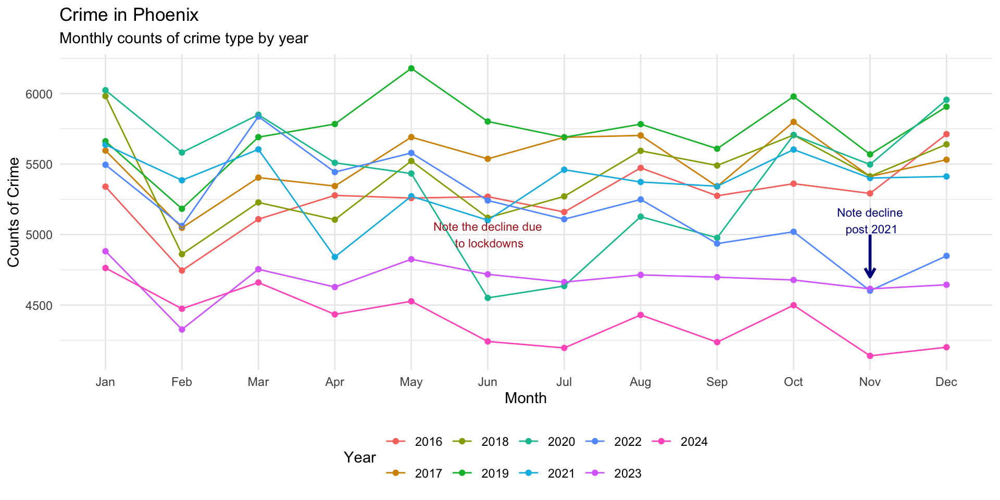
As you can see, much of the process is a back-and-forth between what we want to show, what we want to draw attention to, and so on. While identifying these features for the reader, there are some nice tools for allowing the reader to do their own investigating.
Interactive storytelling
Interactive visualizations allow users to explore data dynamically. Packages such as plotly can add hover labels, zooming, clickable elements, and interactive filtering. These features can be especially valuable for reader engagement as well as dashboard development.
plotly converts static graphics into interactive visualizations and a standard ggplot2 figure can become interactive with a single function: ggplotly().
To use plotly, first install it then load the library (remember that you only need to install the package once, but each time you open RStudio you need to load the library):
install.packages( "plotly" )
library( "plotly" )Now, just take a ggplot2 object and use the ggplotly() function to make it interactive:
ggplotly( crime_plot )Simple as that! So, you can see how we get the plot layout set up using ggplot2 functions and then we can pass it to ggplotly() to render in an interactive format.
Summary
In the previous chapter, we covered the basic grammar of ggplot2. In this chapter, we extended that foundation by focusing on how visualizations can be refined and organized to communicate a story. Creating an accurate graph is important, but effective crime analysis also requires thinking carefully about what the reader should notice and how the design of a visualization can help them understand the patterns in the data.
We began by using themes and scales to improve the appearance and readability of our plots. Themes control the non-data elements of a visualization, while scales determine how data values are translated into visual properties such as axes, labels, and colors. Functions such as theme_minimal(), theme(), and the various scale_...() functions allow us to reduce unnecessary clutter to improve readability and direct attention toward the information that matters. These choices should always serve the analytical purpose of the visualization rather than simply make a graph look more interesting.
We then introduced faceting as a way to compare groups without placing everything into a single crowded visualization. Using facet_wrap(), we created coordinated panels that allowed us to examine crime patterns across years and crime types. We also explored the choice between fixed and free scales. Fixed scales make comparisons across panels easier, while free scales can reveal variation that would otherwise be difficult to see. The appropriate choice depends on what you want the reader to compare and understand.
Sometimes even faceting is not enough to communicate the full story. Using the patchwork package, we learned how to combine multiple plots into a single figure. This allows analysts to present different views of the same data together and organize visualizations into a sequence that supports a broader analytical narrative. Just as importantly, thinking about how plots fit together encourages us to move beyond individual figures and consider how an audience will encounter the analysis as a whole.
Finally, we focused explicitly on storytelling through visualization. Annotations, text, arrows, and other visual elements can direct attention toward important events or patterns and provide context for what the reader is seeing. We also introduced plotly and ggplotly() as a way to transform static ggplot2 figures into interactive visualizations, allowing users to explore the information themselves.
The central lesson of this chapter is that effective visualization requires more than knowing how to make a graph. Themes, scales, facets, layouts, annotations, and interactive features all influence what a reader notices and how they interpret the information presented to them. As a crime analyst, your goal is therefore not simply to create polished visualizations, but to make intentional choices that help transform data into a meaningful story.
Test Your Knowledge
In your own words, explain the difference between creating a visualization and using a visualization to tell a story.
Explain the difference between themes and scales in
ggplot2. What parts of a visualization does each control? Give an example of a function that could be used to modify each.Take the
crime_plotobject created in this chapter and apply a different theme. Then usetheme()to move the legend to the right. How do these changes affect the readability of the visualization?Suppose one crime type occurs thousands of times per month while another occurs fewer than 20 times per month. Would you use fixed scales or free scales to compare their monthly patterns? Explain your choice and identify an important limitation that a reader should understand when interpreting the visualization.
Choose an important pattern in
crime_plotand useannotate()to draw the reader’s attention to it. Add a short text label describing the pattern. Then, if appropriate, add a line or arrow connecting the annotation to the relevant part of the visualization. What do you want the reader to notice first?